در پست قبلی رفتیم سراغ کاله تا ببینیم توی توییتر چیکار میکنه :
حالا در این پست قراره برم سراغ کبریت توکلی! اومدم توییت هایی که شامل کلمه «کبریت توکلی» هستند رو به کمک Selenium و پایتون استخراج کردم و حالا میخوام یکسری تحلیل رو روی داده ها انجام بدم. توییت ها رو از تاریخ پنج شنبه، ۲ خرداد ۱۳۸۷ تا چهارشنبه، ۱۸ خرداد ۱۴۰۱ جمع آوری کردم :
مجموع تعداد توییت های جمعآوری شده 3378 عدد است که توسط 2760 نفر نوشته شده است. اول ببینیم نخستین توییت در چه سالی نوشته شده و در سال های مختلف چه تعداد توییت در مورد کبریت توکلی نوشته شده؟اولین توییت در تاریخ پنج شنبه، ۲ خرداد ۱۳۸۷ نوشته شده :
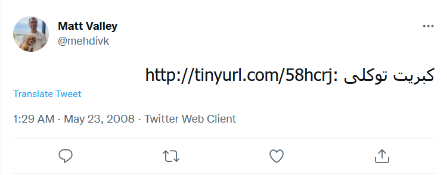
نمودار زیر نشون میده از سال ۲۰۰۸ تا الان هر سال چه تعداد توییت در مورد کبریت توکلی نوشته شده :
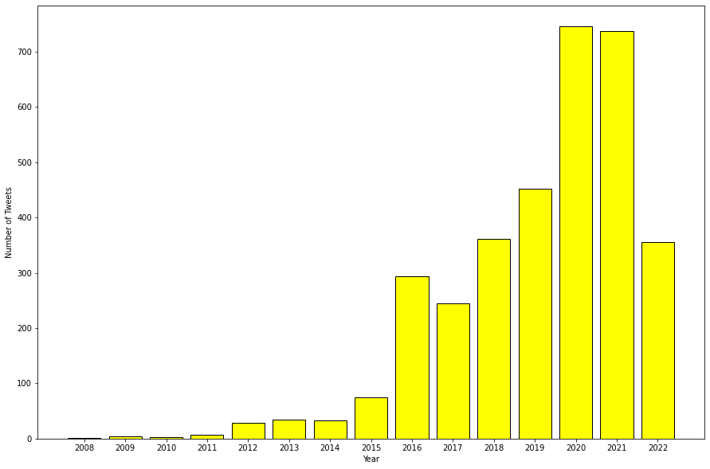
همونطور که از نمودار بالا مشخصه، در سال ۲۰۲۰ بیشترین تعداد توییت در مورد کبریت توکلی نوشته شده که نکته جالبش هم اینه که در سال ۲۰۲۰ دقیقا در مورد دیجیکالا و کاله هم بیشترین تعداد توییت نوشته شده بود!نمودار زیر نشون میده در چه ساعاتی از شبانهروز بیشترین توییت نوشته شده :
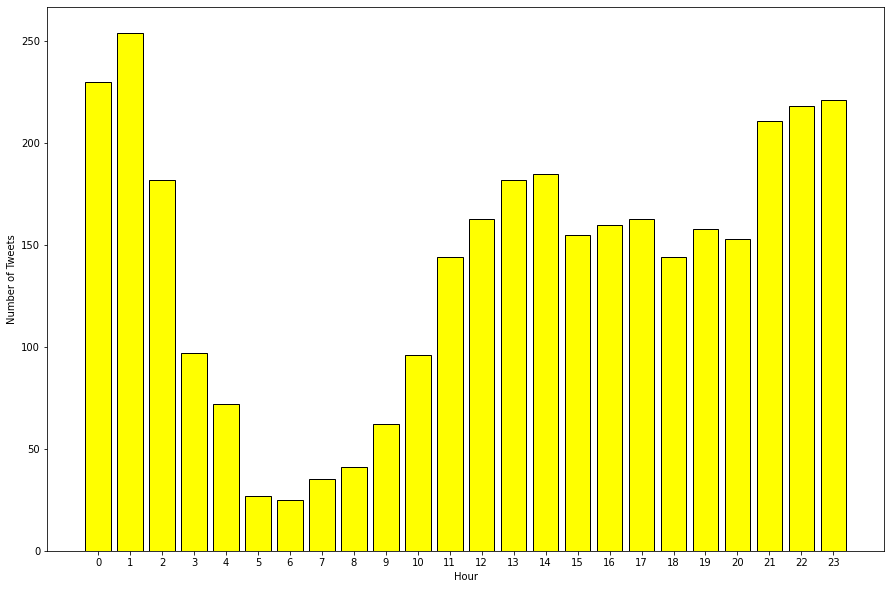
هیت مپ زیر نشان میدهد در چه روزی از هفته و در چه ساعتی از شبانهروز (مطابق ساعت تهران) بیشترین توییت نوشته شده است :
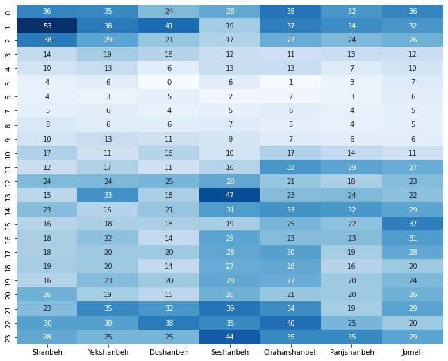
اگر ابر کلمات توییت هایی که در مورد کبریت توکلی نوشته شده رو رسم کنیم نتیجه به صورت زیر میشه :
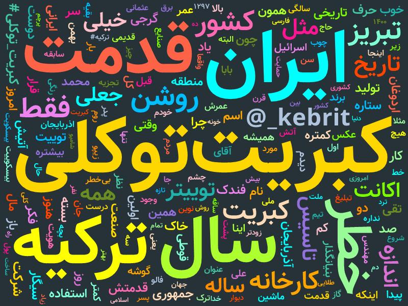
حالا میخوام بررسی کنم که کدوم توییت ها بیشترین تعداد لایک + ریتوییت + کامنت (ریپلای) رو گرفتند.
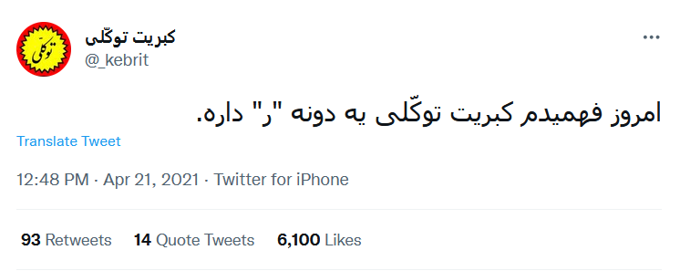
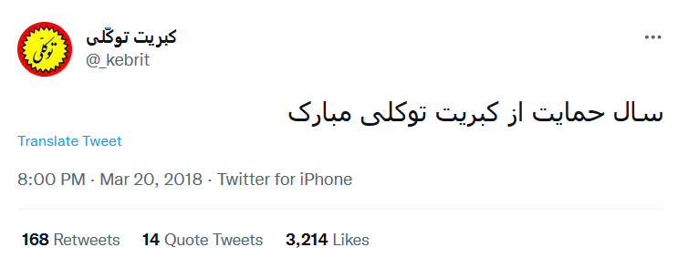
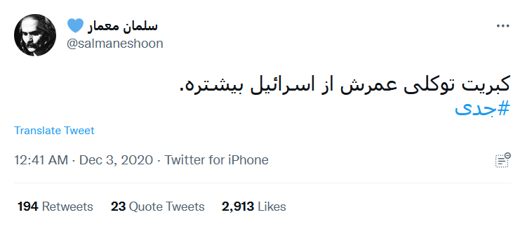
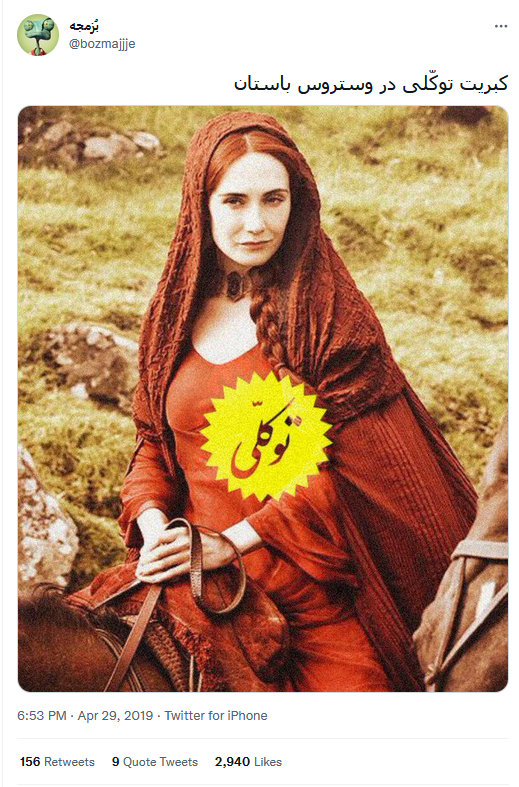
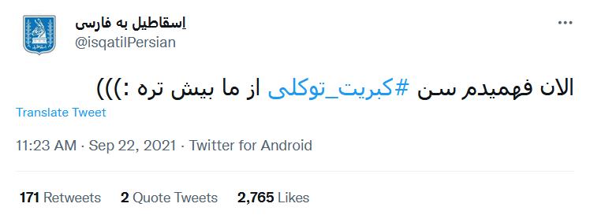
لیست کامل رو در لینک زیر قرار دادم :
حالا میخوام توییت های اکانت کبریت توکلی رو بررسی کنم :
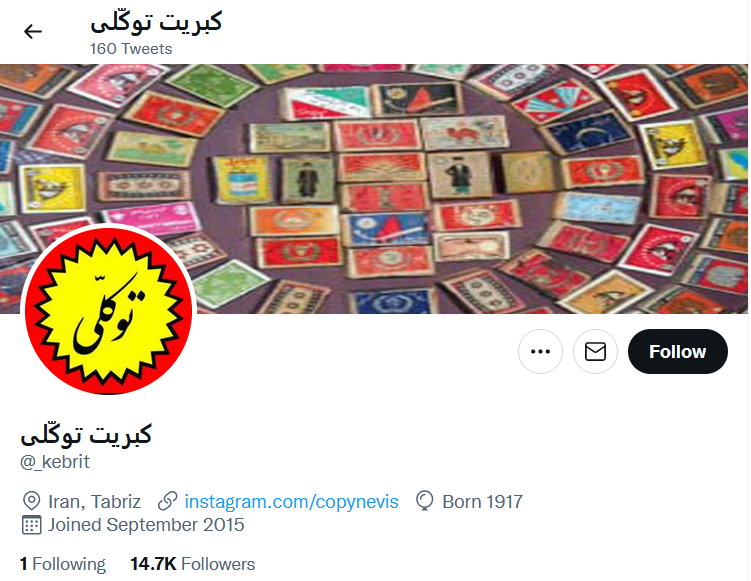
تعداد ۱۵۹ توییت از این اکانت رو ذخیره کردم و حالا میخوام کمی بررسیش کنم. این اکانت در چه روزی از هفته و در چه ساعتی از شبانهروز بیشترین فعالیت رو داشته؟
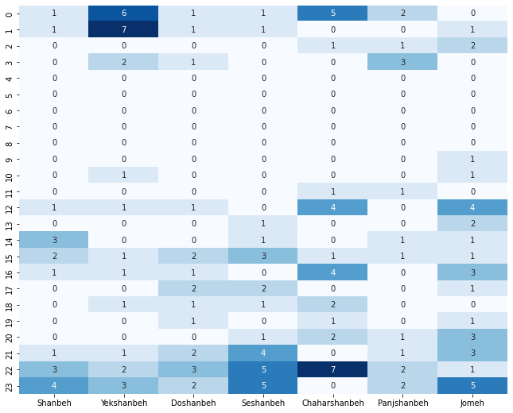
با توجه به تعداد خیییلی کم توییت ها نتیجه جالبی نشد!حالا ببینیم کدوم یکی از توییت های کبریت توکلی بیشتر تعداد لایک + ریتوییت + کامنت رو گرفته :
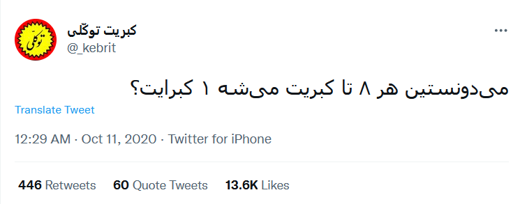
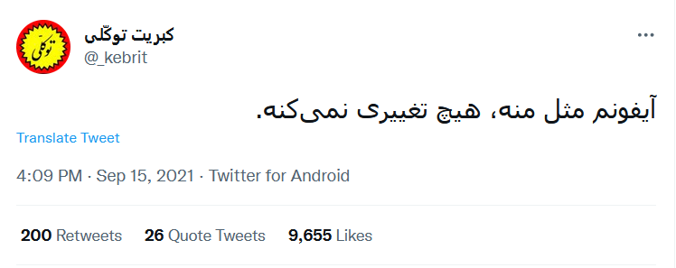
لیست کامل رو در لینک زیر قرار دادم :
nb.neighbours()
| title | date | |
|---|---|---|
| prev | اسنپفود چند رستوران فعال دارد؟! | ۱۴۰۱/۰۳ |
| next | چرا زمستان بیشتر زلزله میآید؟ (بررسی یک شایعه) | ۱۴۰۱/۰۴ |